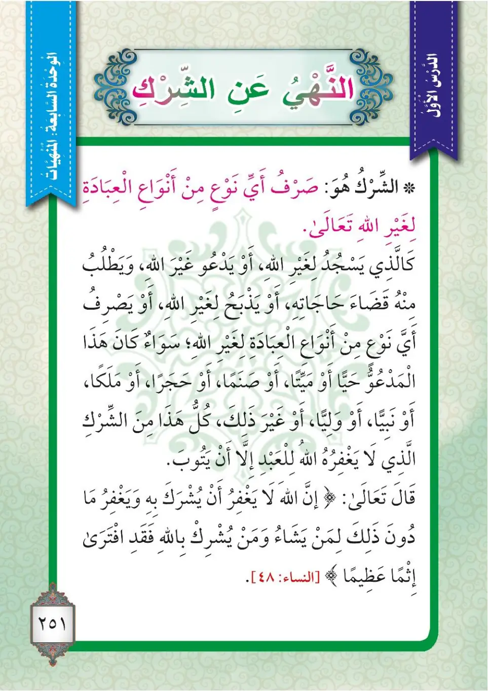

Stage 3·المرحلة الثالثة⭐ Unit 3
النَّهْيُ عَنِ الشِّرْكِ The Prohibition of Shirk
From the Textbookp. 252

الشركُ: هو صرفُ نوعٍ من أنواعِ العبادةِ لغيرِ اللهِ تعالى؛ كالذي يسجدُ لغيرِ اللهِ، أو يدعو غيرَ اللهِ ويطلبُ منهُ قضاءَ الحاجاتِ، أو يذبحُ لغيرِ اللهِ، أو يصرفُ نوعاً من أنواعِ العبادةِ لغيرِ اللهِ؛ سواءٌ كان المدعوُّ حيًّا أو ميتاً، أو صنماً، أو حجراً، أو ملكاً، أو نبياً، أو ولياً، أو غيرَ ذلك؛ فكلُّ هذا من الشركِ الذي لا يغفرُهُ اللهُ للعبدِ إلا أن يتوبَ.
Ash-shirku: Huwa sarfu naw'in min anwa'i al-'ibadati li-ghayri Allahi ta'ala; ka-lladhi yasjudu li-ghayri Allahi, aw yad'u ghayra Allahi wa yatlubu minHu qada'a al-hajat, aw yadbah li-ghayri Allahi, aw yasrifu naw'an min anwa'i al-'ibadati li-ghayri Allahi; sawa'un kana al-mad'uwu hayyan aw mayyitan, aw sanaman, aw hajaran, aw malakan, aw nabiyyan, aw waliyyan, aw ghayra dhalik; fa-kullu hadha mina ash-shirki al-ladhi la yaghfiruHu Allahu lil-'abdi illa an yatuba.
Shirk is: directing any form of worship to other than Allah the Exalted; such as one who prostrates to other than Allah, or supplicates to other than Allah and asks him to fulfil his needs, or slaughters for other than Allah, or directs any form of worship to other than Allah; whether the one called upon is living or dead, or an idol, or a stone, or an angel, or a prophet, or a saint, or other than that; so all of this is from shirk, which Allah does not forgive for His servant unless he repents.
ஷிர்க் (இணைவைத்தல்) என்பது: வணக்கத்தின் எந்த ஒரு வடிவத்தை அல்லாஹ் அல்லாதவருக்கு வழங்குவதாகும் - அல்லாஹ் அல்லாதவருக்கு சஜ்தா செய்பவர், அல்லாஹ் அல்லாதவரிடம் துஆ செய்து தன் தேவைகளை நிறைவேற்றக் கோருபவர், அல்லாஹ் அல்லாதவருக்காக அறுப்பவர், அல்லது வணக்கத்தின் எந்த ஒரு வடிவத்தை அல்லாஹ் அல்லாதவருக்கு வழங்குபவர் போன்றோர். அழைக்கப்படுபவர் உயிருடன் இருப்பினும், இறந்தவராக இருப்பினும், சிலையாக இருப்பினும், கல்லாக இருப்பினும், வானவராக இருப்பினும், நபியாக இருப்பினும், வலீயாக இருப்பினும், மற்றதாக இருப்பினும் - இவை அனைத்தும் ஷிர்க் ஆகும்; இது அல்லாஹ் தன் அடியானுக்கு மன்னிக்க மாட்டான்; அவன் தவ்பா (பாவமீட்சி) செய்தால்தவிர.
﴿إِنَّ اللَّهَ لَا يَغْفِرُ أَن يُشْرَكَ بِهِ وَيَغْفِرُ مَا دُونَ ذَٰلِكَ لِمَن يَشَاءُ ۚ وَمَن يُشْرِكْ بِاللَّهِ فَقَدِ افْتَرَىٰ إِثْمًا عَظِيمًا﴾
Inna Allaha la yaghfiru an yushraka biHi wa yaghfiru ma duna dhalika li-man yasha'; wa man yushrik billahi faqad iftara ithman 'azima.
God does not forgive the joining of partners with Him: anything less than that He forgives to whoever He will, but anyone who joins partners with God has concocted a tremendous sin.
நிச்சயமாக அல்லாஹ் தனக்கு இணை வைப்பதை மன்னிக்க மாட்டான்; அதற்குக் குறைந்ததை அவன் நாடியவருக்கு மன்னிக்கிறான். யார் அல்லாஹ்வுக்கு இணை வைக்கிறானோ அவன் மாபெரும் பாவத்தை இட்டுக்கட்டிக்கொண்டான்.